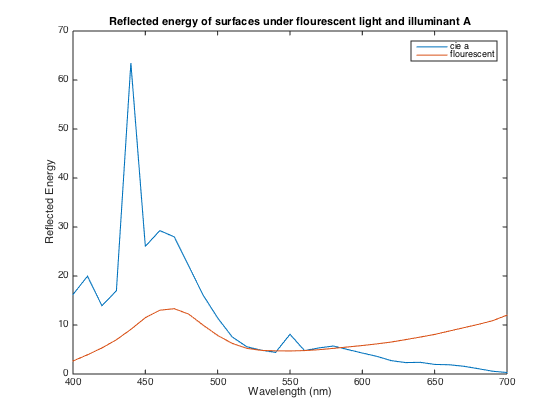

spectrum = linspace(400,700,31);
load surfaces
load illuminants
spect18fl = macbeth(18,:)' .* flourescent';
spect18a = macbeth(18,:)' .* cie_a';
plot(spectrum,[spect18fl, spect18a]);
xlabel('Wavelength (nm)');
ylabel('Reflected Energy');
title('Reflected energy of surfaces under flourescent light and illuminant A')
legend('cie a','flourescent');
load cones
coneSignals18fl = cones * spect18fl;
coneSignals18a = cones * spect18a;
load phosphors
monitor_to_cones = cones * phosphors';
cones_to_monitor = inv(monitor_to_cones);
monitorSignals = cones_to_monitor * coneSignals18a;
baseline = phosphors' * [1 1 1]';
baseline_cones = cones * baseline;
coneSignalsDeltaS = baseline_cones + [0 0 0.5]';
monitorSignalsDeltaS = monitor_to_cones\coneSignalsDeltaS;
cie = zeros(3, 31)
cie(sub2ind(size(cie), [1 2], [4 16])) = 1
cie(3, 31) = 80
color_matching_function = inv(cones * cie') * cones
cie_to_cones = cones * cie';
cones_to_phosphors = inv(cones * phosphors');
cie_to_phosphors = cones_to_phosphors * cie_to_cones;
cie =
Columns 1 through 13
0 0 0 0 0 0 0 0 0 0 0 0 0
0 0 0 0 0 0 0 0 0 0 0 0 0
0 0 0 0 0 0 0 0 0 0 0 0 0
Columns 14 through 26
0 0 0 0 0 0 0 0 0 0 0 0 0
0 0 0 0 0 0 0 0 0 0 0 0 0
0 0 0 0 0 0 0 0 0 0 0 0 0
Columns 27 through 31
0 0 0 0 0
0 0 0 0 0
0 0 0 0 0
cie =
Columns 1 through 13
0 0 0 1 0 0 0 0 0 0 0 0 0
0 0 0 0 0 0 0 0 0 0 0 0 0
0 0 0 0 0 0 0 0 0 0 0 0 0
Columns 14 through 26
0 0 0 0 0 0 0 0 0 0 0 0 0
0 0 1 0 0 0 0 0 0 0 0 0 0
0 0 0 0 0 0 0 0 0 0 0 0 0
Columns 27 through 31
0 0 0 0 0
0 0 0 0 0
0 0 0 0 0
cie =
Columns 1 through 13
0 0 0 1 0 0 0 0 0 0 0 0 0
0 0 0 0 0 0 0 0 0 0 0 0 0
0 0 0 0 0 0 0 0 0 0 0 0 0
Columns 14 through 26
0 0 0 0 0 0 0 0 0 0 0 0 0
0 0 1 0 0 0 0 0 0 0 0 0 0
0 0 0 0 0 0 0 0 0 0 0 0 0
Columns 27 through 31
0 0 0 0 0
0 0 0 0 0
0 0 0 0 80
color_matching_function =
Columns 1 through 7
0.1923 0.4017 0.7308 1.0000 1.1025 1.0127 0.8844
-0.0016 -0.0031 -0.0044 -0.0000 0.0133 0.0327 0.0602
0.0024 0.0045 0.0059 -0.0000 -0.0167 -0.0409 -0.0734
Columns 8 through 14
0.7645 0.5163 0.3066 0.1820 0.1042 0.0478 0.0215
0.1100 0.1779 0.2647 0.4010 0.6061 0.8244 0.9595
-0.1198 -0.1588 -0.1945 -0.2467 -0.3136 -0.3400 -0.2840
Columns 15 through 21
0.0085 -0.0000 0.0003 -0.0035 -0.0028 -0.0020 -0.0013
1.0135 1.0000 0.9311 0.8081 0.6455 0.4651 0.3013
-0.1664 -0.0000 0.2093 0.4512 0.6947 0.8970 1.0100
Columns 22 through 28
-0.0007 -0.0004 -0.0002 -0.0001 -0.0000 -0.0000 -0.0000
0.1754 0.0934 0.0453 0.0202 0.0082 0.0036 0.0014
1.0017 0.8779 0.6706 0.4723 0.3012 0.1750 0.0932
Columns 29 through 31
-0.0000 -0.0000 -0.0000
0.0005 0.0003 0.0000
0.0503 0.0242 0.0125
